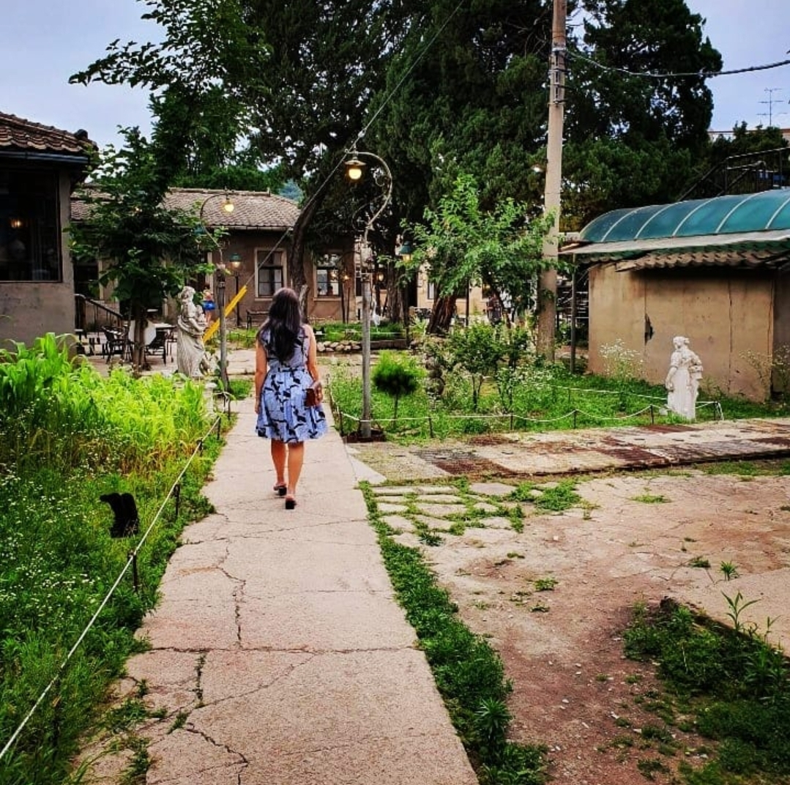
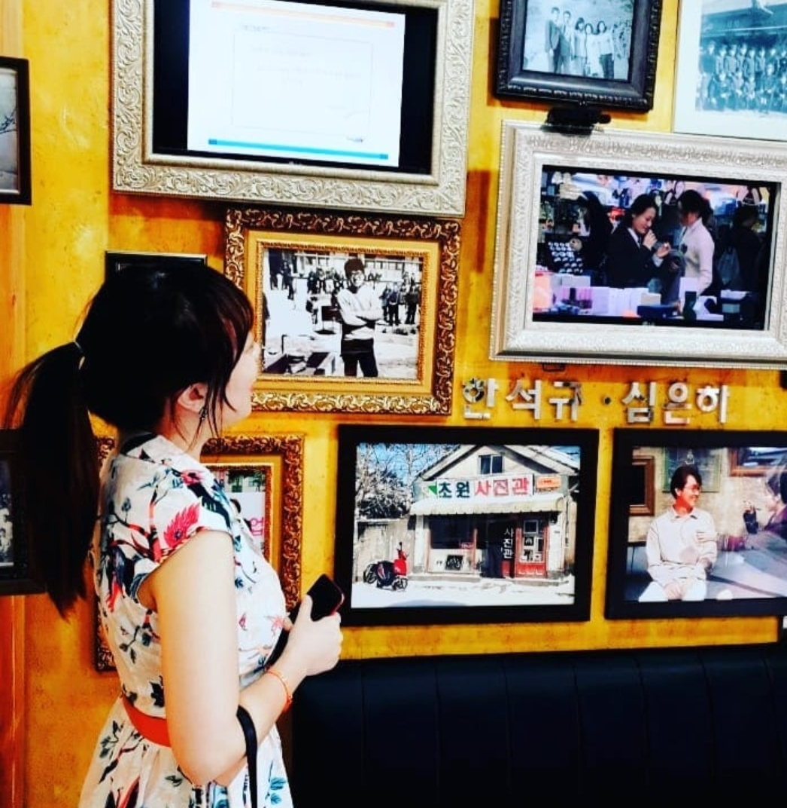
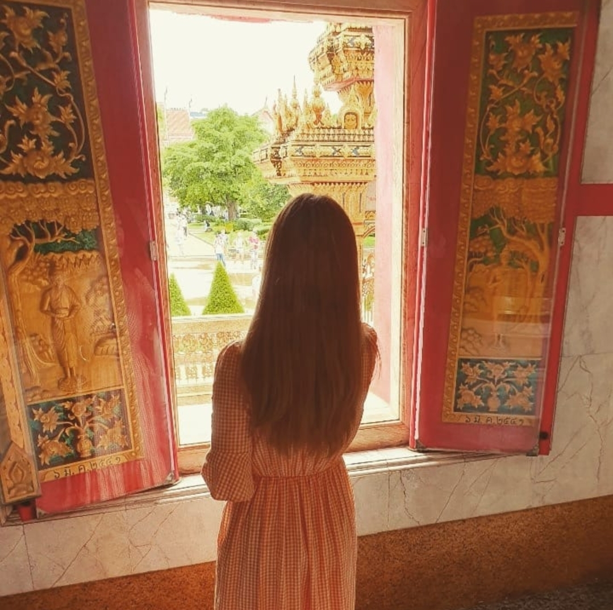
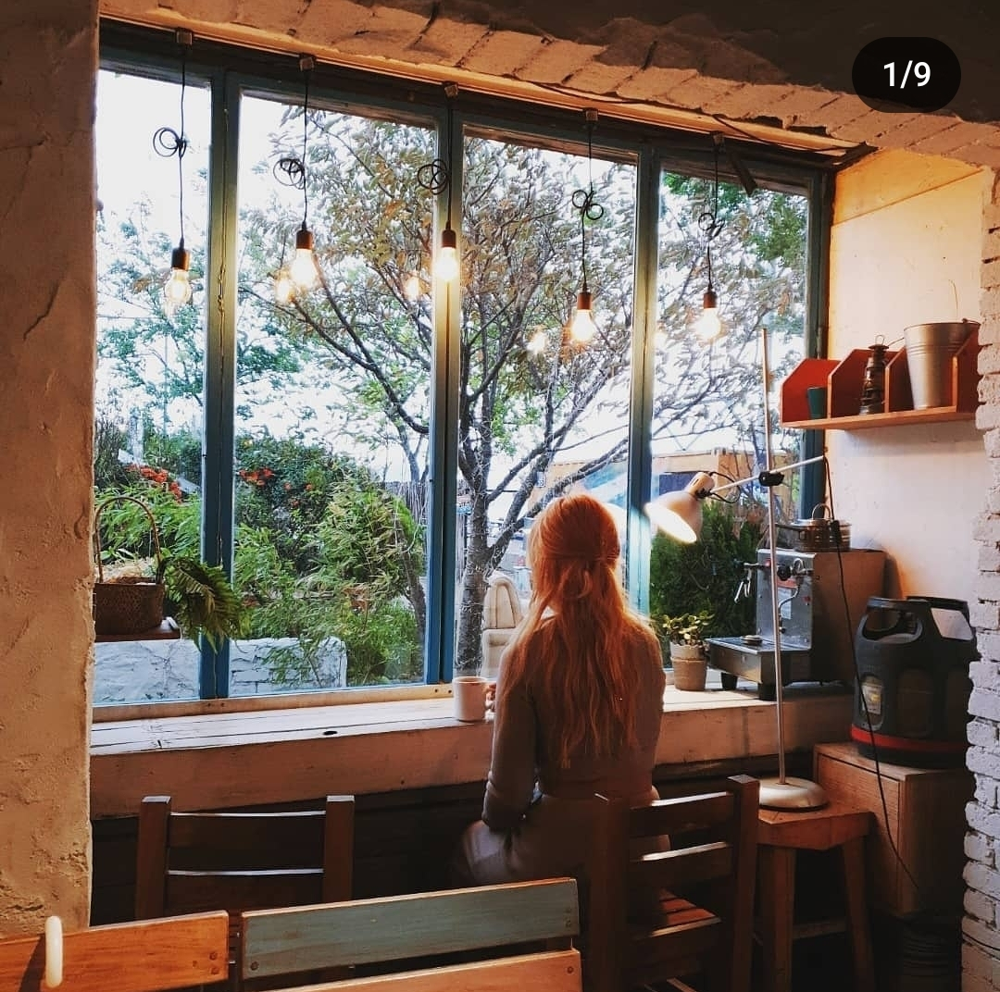

귀사에 입사하게 된다면, 항상 새로운 도전을 즐기며 창의적인 웹디자인과 퍼블리싱 작업을 통해 회사의 비전과 목표를 실현하는 데 적극적으로 행동할 것입니다. 특히, 제가 갖춘 디자인과 퍼블리싱 기술을 활용하여, 귀사의 웹사이트가 고객에게 더욱 직관적이고 매력적으로 다가갈 수 있도록 돕겠습니다. 또한, 프로젝트 관리와 팀워크를 중시하며, 다양한 팀원들과 협력하여 효율적으로 작업을 진행할 수 있습니다. 모형 회사에서의 정직원으로서의 경험과 소리친구 녹음실과 이일래 실용음악학원에서의 부원장 직책을 통해 조직 운영과 팀워크의 중요성을 깨닫게 되었습니다. 입사 후에는 빠르게 실력을 향상시키고 적응하여 점차 더 큰 프로젝트와 더 높은 책임을 맡아 회사의 성장하고 발전해 나아가겠습니다. 개인적으로도 디자인과 웹퍼블리싱 분야에서 전문성의 지식을 높여 나갈 것이며 지속적인 학습과 도전을 통해 더 큰 가치를 창출하고, 디자인 분야에서의 역량을 한층 더 높여 나아 갈 계획입니다. 이러한 다양한 경험을 통해 얻은 조직 내 협업, 문제 해결, 고객 응대 등의 능력은 웹디자인 및 웹퍼블리싱 작업에서 매우 중요한 자산이 될 것입니다. 그동안 쌓은 경험과 기술을 바탕으로 귀사에서의 새로운 도전과 성장에 기여하고 싶습니다.
귀사에 입사하게 된다면, 항상 새로운 도전을 즐기며 창의적인 웹디자인과 퍼블리싱 작업을 통해 회사의 비전과 목표를 실현하는 데 적극적으로 행동할 것입니다. 특히, 제가 갖춘 디자인과 퍼블리싱 기술을 활용하여, 귀사의 웹사이트가 고객에게 더욱 직관적이고 매력적으로 다가갈 수 있도록 돕겠습니다. 입사 후에는 빠르게 실력을 향상시키고 적응하여 점차 더 큰 프로젝트와 더 높은 책임을 맡아 회사의 성장하고 발전해 나아가겠습니다. 개인적으로도 디자인과 웹퍼블리싱 분야에서 전문성의 지식을 높여 나갈 것이며 지속적인 학습과 도전을 통해 더 큰 가치를 창출하고, 디자인 분야에서의 역량을 한층 더 높여 나아 갈 계획입니다. 그동안 쌓은 경험과 기술을 바탕으로 귀사에서의 새로운 도전과 성장에 기여하고 싶습니다.